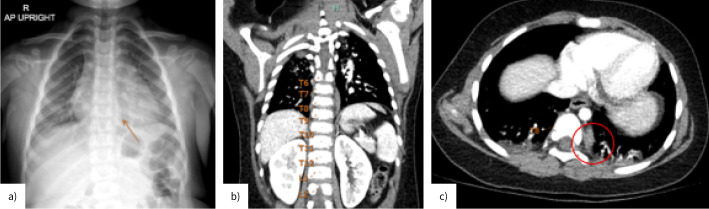
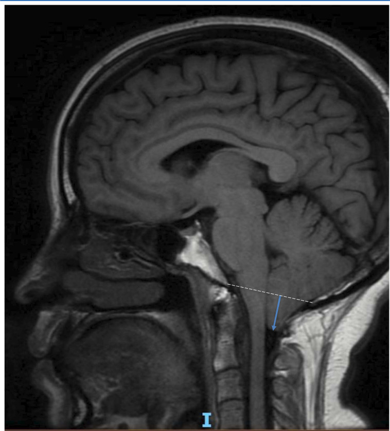
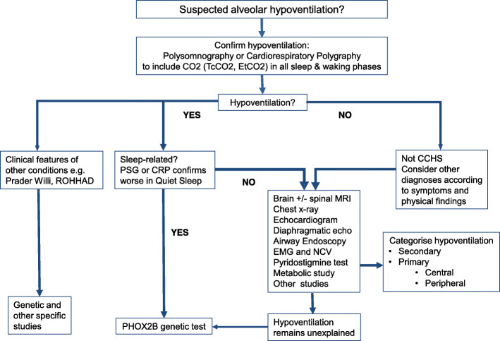
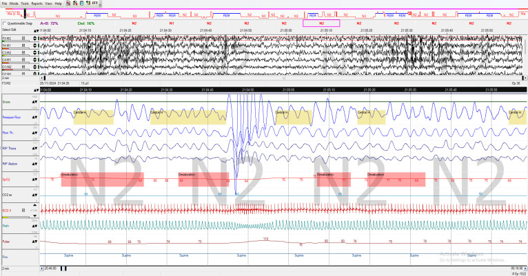
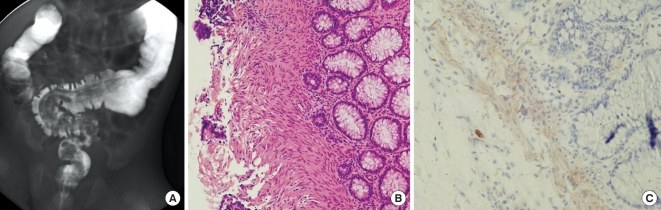

3079 — Hội chứng ngưng thở trung ương bẩm sinh (CCHS): khi phổi bình thường nhưng “đồng hồ thở” không chạy
Tags: pattern:giam-thong-khi-trung-uong pattern:ngung-tho-trung-uong pattern:phe-quan-binh-thuong vung:than-nao vung:duong-tho vung:phoi anatomy:than-nao protocol:PSG protocol:MRI-nao-tuy protocol:XR-nguc protocol:do-dien-sinh-co-hoanh score:AASM-hypoventilation score:PHOX2B-genotype
Mức chắc chắn (certainty): tổng hợp y văn (literature synthesis) — ghép hướng dẫn chẩn đoán – theo dõi CCHS 2020 (Orphanet J Rare Dis, PMC7503443), review đa chuyên khoa 2022 (PMC8963195), ca Haddad syndrome có ảnh đối quang (J Korean Med Sci 2011, PMC3031022), ca ROHHAD có X-quang/CT trung thất (ERJ Open Res 2026, PMC13386199) và ca Chiari I có MRI (BMJ Case Rep 2026, PMC12887155). Không có ca do nhóm tự chụp.
Câu hỏi thực hành: sơ sinh đủ tháng ngưng thở tái diễn khi ngủ, SpO₂ 70–80%, PaCO₂ 60 mmHg nhưng phổi trong, không rít, không co kéo; cho thở CPAP thì vẫn giảm thông khí khi ngủ sâu. Bạn nghĩ bệnh phổi, ngưng thở do trào ngược, hay “đồng hồ thở” ở thân não? Bài chốt ba bước: (1) chứng minh giảm thông khí trung ương bằng PSG có đo CO₂; (2) loại trừ nguyên nhân thực thể bằng MRI não–tủy, X-quang ngực, siêu âm tim/hoành; (3) xác nhận bằng PHOX2B — không chẩn đoán CCHS chỉ vì “ngưng thở”.
1. Tổng quan bệnh học – cơ chế hình ảnh: phổi lành nhưng não không “nghe” CO₂
- Bản chất: CCHS (congenital central hypoventilation syndrome; tên cũ “lời nguyền Ondine – Ondine’s curse”) là giảm thông khí trung ương bẩm sinh do giảm hoặc mất đáp ứng với tăng CO₂ và giảm O₂, nặng nhất khi ngủ NREM, kèm rối loạn chức năng tự chủ (Hirschsprung, u mào thần kinh, loạn nhịp tim).
- Gen – cơ chế: PHOX2B (4p12) là yếu tố phiên mã điều khiển phát triển hệ thần kinh tự chủ và các nơ-ron hô hấp ở nhân retro-trapezoid/parafacial — nơi cảm nhận CO₂. Đột biến PARM (polyalanine repeat mutation) chiếm ~90%, NPARM ~10% (PMC8963195). Trình tự bình thường 20 alanine; CCHS do giãn thành 24–33 alanine, kiểu gen 20/24 – 20/33; hay gặp 20/25, 20/26, 20/27.
- TẠI SAO tổn thương không thấy trên CT/MRI: đột biến làm mạng nơ-ron hóa học CO₂ phát triển sai chứ không tạo khối, nhồi máu hay dị tật lớn — vì vậy MRI não bình thường không loại trừ CCHS; MRI dùng để loại trừ nguyên nhân thứ phát (Chiari, u thân não, nhồi máu, loạn sản).
- TẠI SAO nặng nhất khi ngủ NREM: khi thức và ngủ REM còn có điều khiển “hành vi”/các đường khác; trong ngủ yên (quiet sleep/NREM), thông khí phụ thuộc gần như hoàn toàn vào điều khiển tự động theo CO₂ — hệ này hỏng nên nhịp thở đều nhưng nông, giảm tần số và thể tích khí lưu thông, CO₂ tăng dần.
- TẠI SAO X-quang phổi bình thường: bệnh ở trung tâm điều khiển, không ở nhu mô phổi. X-quang dùng để loại trừ viêm phổi, xẹp, dị tật phổi, thoát vị hoành và phát hiện biến chứng hít sặc — không dùng để chẩn đoán CCHS.
- Dịch tễ và ngưỡng phải thuộc:
| Biến số | Số liệu | Nguồn |
|---|---|---|
| Tần suất | 1/148.000–1/200.000 trẻ sinh sống; hiện mắc 1/500.000 | PMC7503443 |
| Đột biến PHOX2B | PARM ~90%, NPARM ~10%; PARM giãn 20 → 24–33 alanine | PMC8963195 |
| Thể khởi phát muộn | Thường 20/24 hoặc 20/25, giảm thông khí nhẹ hơn | PMC7503443 |
| U mào thần kinh | 3–5% bệnh nhân CCHS (neuroblastoma, ganglioneuroma) | PMC7503443 |
| Ngất/ngất lịm | Tới 25% bệnh nhân, do nhịp chậm, asystole thoáng qua hoặc tụt huyết áp | PMC7503443 |
| Ngưỡng giảm thông khí khi ngủ ở trẻ | PCO₂ > 50 mmHg (6,7 kPa) trong > 25% tổng thời gian ngủ (AASM 2012) | PMC7503443 |
| Ngưỡng ở người lớn | PaCO₂ > 55 mmHg (7,3 kPa) ≥ 10 phút, hoặc tăng ≥ 10 mmHg so với khi thức nằm ngửa và > 50 mmHg ≥ 10 phút | PMC7503443 |
| Mục tiêu thông khí | PCO₂ 35–45 mmHg (4,7–6,0 kPa); EtCO₂ 30–40 mmHg | PMC7503443 |
2. Mẫu hình + chẩn đoán phân biệt theo vị trí (gamut)
- Mẫu hình cốt lõi: giảm thông khí trung ương = giảm tần số/thể tích thở, không có cố gắng tắc nghẽn, không co kéo, không nghẹt mũi, không đáp ứng với CPAP; CO₂ tăng, O₂ giảm, nặng hơn ở NREM.
- Gamut theo vị trí tổn thương:
- Thân não (brainstem): CCHS · Chiari I/II chèn hành–tủy · u thân não · nhồi máu/chảy máu · bệnh Leigh · viêm não · ngộ độc opioid/thuốc an thần.
- Tủy cổ cao: chèn ép, syrinx, chấn thương, u — mất đường đi từ trung tâm hô hấp xuống hoành.
- Dây thần kinh hoành: liệt hoành một/hai bên sau mổ tim, chấn thương sinh ngả, u trung thất.
- Cơ – thần kinh cơ: loạn dưỡng cơ, SMA, myasthenia, bệnh cơ bẩm sinh — giảm thông khí do yếu cơ, không phải trung ương.
- Đường thở – phổi: tắc nghẽn trên/dưới thanh môn, hẹp khí quản, bệnh phổi mạn, xẹp — có co kéo, có tiếng rít, đáp ứng phần nào với CPAP.
- Chuyển hóa – nội tiết: hạ đường huyết, tăng amoniac, suy giáp, béo phì giảm thông khí (OHS).
- Gamut theo tuổi:
- Sơ sinh: CCHS · ngưng thở non tháng · bệnh màng trong · hít phân su · dị tật phổi · Chiari · rối loạn chuyển hóa.
- Nhũ nhi – trẻ nhỏ: CCHS thể muộn · ROHHAD · Prader–Willi · Chiari · u thân não · động kinh/ngưng thở do trào ngược.
- Trẻ lớn – người lớn: ROHHAD · OHS · bệnh thần kinh cơ · tổn thương thân não mắc phải · CCHS thể muộn.
- Mẹo nhớ 4 câu hỏi: (1) có giảm thông khí khi thức không? (2) có tắc nghẽn đường thở không? (3) có dấu thần kinh/tủy không? (4) PHOX2B có đột biến không?
3. Bảng so sánh phân biệt (ma trận đối chiếu)
| Thực thể (entity) | Hình ảnh/lâm sàng điển hình | Chốt vào (rule-in) | Chốt loại (rule-out) | Gợi ý xác nhận |
|---|---|---|---|---|
| CCHS | Phổi trong; PSG giảm thông khí trung ương nặng ở NREM; không tắc nghẽn; có thể táo bón/Hirschsprung, u mào thần kinh | Giảm thông khí trung ương khi ngủ + không nguyên nhân thực thể + PHOX2B đột biến | Đáp ứng hoàn toàn với CPAP, có tắc nghẽn rõ, hoặc có tổn thương thân não → không phải CCHS | PHOX2B PCR + giải trình tự; PSG có CO₂ |
| ROHHAD | Béo phì khởi phát nhanh, rối loạn chức năng vùng dưới đồi, giảm thông khí, rối loạn tự chủ; có thể u mào thần kinh cạnh sống | Béo phì + giảm thông khí + rối loạn nội tiết/tự chủ, không đột biến PHOX2B | Cân nặng bình thường, chỉ giảm thông khí khi ngủ → nghĩ CCHS | Lâm sàng + nội tiết + tầm soát u (CT/MRI, MIBG) |
| Prader–Willi | Béo phì, giảm trương lực, chậm phát triển, cuồng ăn; ngưng thở thường tắc nghẽn hơn trung ương | Mất đoạn 15q11–q13/giảm biểu hiện + kiểu hình đặc trưng | Giảm thông khí trung ương thuần khi ngủ, không kiểu hình PWS → không phải | Methylation/array; PSG |
| Chiari I | Hạnh nhân tiểu não xuống dưới đường McRae ≥ 5 mm, có thể syrinx; đau đầu, yếu chi, rung giật nhãn cầu | MRI thấy hạnh nhân thoát vị + giảm thông khí trung ương | Không thoát vị hạnh nhân, không syrinx → loại | MRI sọ–tủy cổ T1/T2; đo McRae |
| Bệnh cơ/thần kinh cơ | Yếu cơ, giảm phản xạ, teo cơ; giảm thông khí do yếu, không chỉ khi ngủ | Yếu cơ + giảm thông khí khi thức + men cơ/EMG bất thường | Sức cơ bình thường, chỉ giảm thông khí khi ngủ → nghĩ trung ương | EMG/NCV, CK, sinh thiết cơ nếu cần |
| OHS (béo phì giảm thông khí) | BMI cao, ngáy, ngưng thở tắc nghẽn + giảm thông khí khi thức; PaCO₂ > 45 mmHg khi thức | BMI ≥ 30 + PaCO₂ > 45 mmHg khi thức, sau loại trừ nguyên nhân khác | Không béo phì, PaCO₂ khi thức bình thường → loại | Khí máu khi thức; PSG |
| Ngưng thở tắc nghẽn (OSA) | Ngáy, co kéo, ngưng thở có cố gắng, giảm thông khí không tương xứng | Chỉ số ngưng thở–giảm thở tắc nghẽn tăng, có cố gắng | Không cố gắng, không tắc nghẽn, giảm thông khí khi NREM → trung ương | PSG; CPAP thử |
| Tổn thương thân não mắc phải | Khởi phát cấp/từ từ sau chấn thương, sốt, đột quỵ; dấu thần kinh khu trú | MRI/DWI thấy tổn thương + bệnh cảnh phù hợp | MRI bình thường, bệnh cảnh bẩm sinh → nghĩ CCHS | MRI sọ có DWI; khám thần kinh |

ERJ Open Res 2026 (PMC13386199), CC BY-NC 4.0: (a) X-quang ngực — khối mờ hình thoi chồng lên bóng tim; (b, c) CT có cản quang — khối mô mềm đồng nhất, bờ rõ, cạnh sống trái T7–T9, sau đó giải phẫu bệnh là ganglioneuroma trưởng thành. Đây là hàng phân biệt quan trọng: ROHHAD có thể kèm u mào thần kinh và giảm thông khí trung ương, nhưng không có đột biến PHOX2B. Ảnh nguyên bản, không cắt ghép.
BMJ Case Rep 2026 (PMC12887155), CC BY-NC 4.0: MRI T1 sagittal — hạnh nhân tiểu não sa xuống 11 mm dưới đường McRae (mũi tên xanh), chèn ép hành–tủy. Chiari I là nguyên nhân thứ phát của giảm thông khí trung ương; phải loại trừ trước khi gọi CCHS. Ảnh nguyên bản.4. Protocol chụp + hệ phân độ/ngưỡng xử trí
- Bước 1 — chứng minh giảm thông khí: PSG (polysomnography) hoặc CRP (cardiorespiratory polygraphy) có TcCO₂/EtCO₂ ở cả lúc ngủ và lúc thức, đủ chu kỳ ngủ; ghi SpO₂, CO₂, luồng khí, cố gắng ngực–bụng, ECG. Ngưỡng AASM 2012 như bảng mục 1.
- Bước 2 — loại trừ nguyên nhân thực thể (theo hướng dẫn 2020):
- MRI sọ + tủy cổ (T1/T2 lát mỏng qua hành–tủy, đo hạnh nhân so với đường McRae; tìm syrinx, u, nhồi máu, loạn sản).
- X-quang ngực (2 tư thế khi cần): phổi, màng phổi, hoành, khí quản; tìm hít sặc/xẹp.
- Siêu âm tim: tăng áp phổi, shunt, chức năng tim.
- Siêu âm/soi hoành: liệt hoành, eventration; đo dẫn truyền thần kinh hoành khi nghi.
- Nội soi đường thở nếu có rít/tắc nghẽn; EMG/NCV nếu nghi thần kinh cơ; chuyển hóa (đường huyết, amoniac, lactat, axit hữu cơ) ở trẻ nhỏ.
- Bước 3 — xác nhận di truyền: PHOX2B bằng PCR khuếch đại vùng giàu GC + điện di đoạn + giải trình tự (phát hiện cả PARM và NPARM). Không bỏ sót NPARM vì thể này có thể giảm thông khí nhẹ nhưng nguy cơ Hirschsprung/u cao.
- Bước 4 — tầm soát bệnh kèm: barium enema khi nghi Hirschsprung (thấy vùng chuyển tiếp — đoạn vô hạch hẹp, phía trên giãn); sinh thiết hút trực tràng là tiêu chuẩn vàng. Siêu âm bụng/CT/MRI + MIBG tầm soát u mào thần kinh ở 20/28–20/33 và NPARM. Holter/ILR tìm nhịp chậm–asystole; siêu âm tim định kỳ; khám mắt (khô mắt, lác) hàng năm.
- Theo dõi (hướng dẫn 2020): trẻ < 2 tuổi: mỗi 2–6 tháng; ≥ 2 tuổi: hàng năm — PSG/CRP có CO₂, khí máu khi thức, đánh giá thông khí tự thở và cài đặt máy; phát triển thần kinh mỗi 4–6 tháng (< 2–3 tuổi), sau đó mỗi 2 năm; tầm soát u theo kiểu gen (xem trên).
- Điều trị: hỗ trợ thông khí (NIV, mở khí quản, kích thích cơ hoành ở ca chọn lọc), tránh thuốc ức chế hô hấp (opioid, benzodiazepine, gây mê không giám sát), monitor tại nhà, xử lý táo bón/Hirschsprung, điều trị loạn nhịp, tư vấn di truyền.

Orphanet J Rare Dis 2020 (PMC7503443), CC BY 4.0: xác nhận giảm thông khí bằng PSG/CRP có CO₂ → phân biệt liên quan giấc ngủ (PSG nặng hơn ở quiet sleep) với không liên quan giấc ngủ → MRI não/tủy, X-quang ngực, siêu âm tim/hoành, nội soi, EMG/NCV, xét nghiệm chuyển hóa → PHOX2B khi không tìm được nguyên nhân. Ảnh nguyên bản.flowchart TD
A[Trẻ ngưng thở hoặc giảm thông khí khi ngủ] --> B[PSG hoặc CRP có TcCO2 và EtCO2]
B --> C{Giảm thông khí trung ương?}
C -->|Không| D[Tìm tắc nghẽn, bệnh phổi, thiếu máu, trào ngược]
C -->|Có| E[MRI não và tủy cổ + X-quang ngực + siêu âm tim và hoành]
E --> F{Có nguyên nhân thực thể?}
F -->|Có| G[Điều trị nguyên nhân: Chiari, u, chuyển hóa, thần kinh cơ]
F -->|Không| H[PHOX2B PCR và giải trình tự]
H --> I{Đột biến PHOX2B?}
I -->|Có| J[CCHS: hỗ trợ thông khí + theo dõi đa chuyên khoa]
I -->|Không| K[CCHS-like, ROHHAD, Prader-Willi: chẩn đoán lâm sàng + gen khác]
J --> L[Tầm soát Hirschsprung, u mào thần kinh, loạn nhịp, mắt]
5. Biến thể bình thường và cạm bẫy
- Ngưng thở non tháng (apnea of prematurity): thường tự hết theo tuổi thai, không kèm rối loạn tự chủ, không có đột biến PHOX2B — không gọi CCHS.
- Thở chu kỳ ở nhũ nhi: mẫu hình đều đặn, không giảm thông khí kéo dài, không tăng CO₂ — đừng chẩn đoán nhầm.
- MRI bình thường không loại trừ CCHS: CCHS là bệnh chức năng/di truyền; thiếu tổn thương không có nghĩa là không bệnh.
- EtCO₂ có thể thấp giả do rò khí, ống thở, tưới máu kém: phải đối chiếu TcCO₂ và khí máu, không dựa một kênh.
- Chỉ chụp PSG khi ngủ: bỏ sót giảm thông khí khi thức ở thể nặng; phải đo cả lúc thức.
- Béo phì + ngưng thở: dễ quy hết cho OSA; nếu PaCO₂ khi thức > 45 mmHg hoặc giảm thông khí không tương xứng với tắc nghẽn, nghĩ OHS/ROHHAD, không phải OSA đơn thuần.
- Chiari “nhẹ”: hạnh nhân xuống 5–6 mm có thể vô tình; tìm syrinx, mất dòng dịch não tủy, triệu chứng trước khi quy cho Chiari.
- Thuốc an thần/opioid sau mổ: gây giảm thông khí trung ương mắc phải, hồi phục — hỏi kỹ thuốc trước khi làm xét nghiệm di truyền.
- Gọi “Ondine’s curse” dễ gây nhầm với ngưng thở tắc nghẽn; dùng CCHS và mô tả trung ương.
6. Tự lượng giá — Blind Quiz
Ca 1 — Trẻ 2,5 tuổi béo phì, giảm thông khí dai dẳng sau viêm phổi. Nhìn PSG trước, mô tả kiểu thở.

- Gợi ý: trẻ 2,5 tuổi, béo phì, giảm thông khí dai dẳng sau viêm phổi; PSG ghi khi tạm ngừng BPAP.
- Câu hỏi: Có cố gắng thở trong cơn ngưng thở không? Giảm thông khí nặng ở giai đoạn ngủ nào? 3 chẩn đoán phân biệt và xét nghiệm chốt?
Bấm để hiện đáp án (findings + chẩn đoán)
- Dấu hiệu: các đoạn giảm biên độ luồng khí và thể tích lặp lại, SpO₂ tụt (đường đỏ), PetCO₂ cao/dao động, không có co kéo ngực–bụng nghịch pha; các cơn ngưng thở trung ương chiếm ưu thế trong N2 (quiet sleep).
- Chẩn đoán: giảm thông khí trung ương; ở trẻ béo phì khởi phát nhanh + rối loạn vùng dưới đồi, đây là ROHHAD, không phải CCHS (không có PHOX2B). Phân biệt: CCHS, OHS, OSA, Chiari, bệnh cơ.
- Xác nhận: PSG có TcCO₂/EtCO₂ + khí máu khi thức; MRI não–tủy; PHOX2B; tầm soát u mào thần kinh.
- Nguồn ảnh: ERJ Open Res 2026 (PMC13386199), CC BY-NC 4.0.
Ca 2 — Trẻ CCHS táo bón, bụng chướng; chụp đối quang đại tràng.

- Gợi ý: trẻ có CCHS, chậm phân xu, bụng chướng; ảnh gồm đối quang (A) và mô học (B, C).
- Câu hỏi: Đoạn nào hẹp, đoạn nào giãn? Vì sao CCHS lại kèm bệnh này? Xét nghiệm chuẩn để xác nhận?
Bấm để hiện đáp án
- Dấu hiệu: (A) đoạn trực tràng–sigma hẹp (vô hạch) với vùng chuyển tiếp hình phễu, phía trên đại tràng giãn; (B, C) mô học cho thấy không có tế bào hạch và tăng sợi thần kinh.
- Chẩn đoán: Hirschsprung (Haddad syndrome = CCHS + Hirschsprung) — cùng nguồn gốc mào thần kinh/PHOX2B.
- Xác nhận: sinh thiết hút trực tràng (tiêu chuẩn vàng); barium enema chỉ gợi ý, không thay thế mô học.
- Nguồn ảnh: J Korean Med Sci 2011 (PMC3031022), CC BY-NC 3.0.
Ca 3 — Trẻ béo phì + giảm thông khí khi ngủ + khối cạnh sống. Xem X-quang/CT.
- Câu hỏi: Khối nằm ở khoang nào? Nó liên quan gì đến kiểu hình béo phì – giảm thông khí? Cần tầm soát gì tiếp?
Bấm để hiện đáp án
- Dấu hiệu: khối trung thất sau, cạnh sống trái T7–T9, đồng nhất, bờ rõ; X-quang chỉ thấy mờ hình thoi chồng bóng tim.
- Chẩn đoán: ganglioneuroma trong bệnh cảnh ROHHAD — u mào thần kinh là bệnh kèm, không phải CCHS.
- Tiếp theo: MRI toàn thân/MIBG, siêu âm bụng, xét nghiệm nội tiết; không làm PHOX2B thay cho tầm soát u.
- Nguồn ảnh: ERJ Open Res 2026 (PMC13386199), CC BY-NC 4.0.
Bài liên quan chéo
- 600 – Tổng quan hệ Nhi khoa
- 610 – Suy hô hấp sơ sinh & dị dạng phổi
- 6100 – Chăm sóc và cai ống mở khí quản ở trẻ
- 1830 – OSA ở trẻ Prader–Willi
- 1803 – Ngưng thở khi ngủ tắc nghẽn ở trẻ bệnh phổi mạn
- 6123 – Rối loạn nuốt và hít sặc ở trẻ mở khí quản
Không dùng để chẩn đoán độc lập khi chưa có người hướng dẫn.